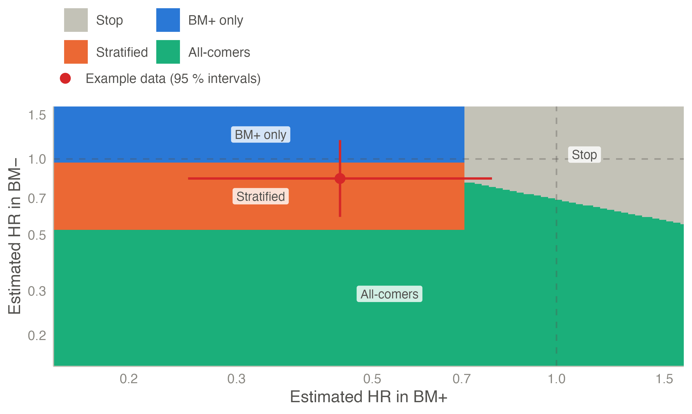
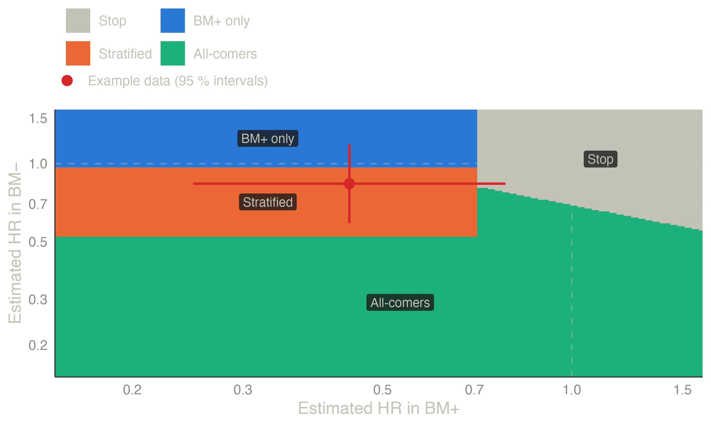
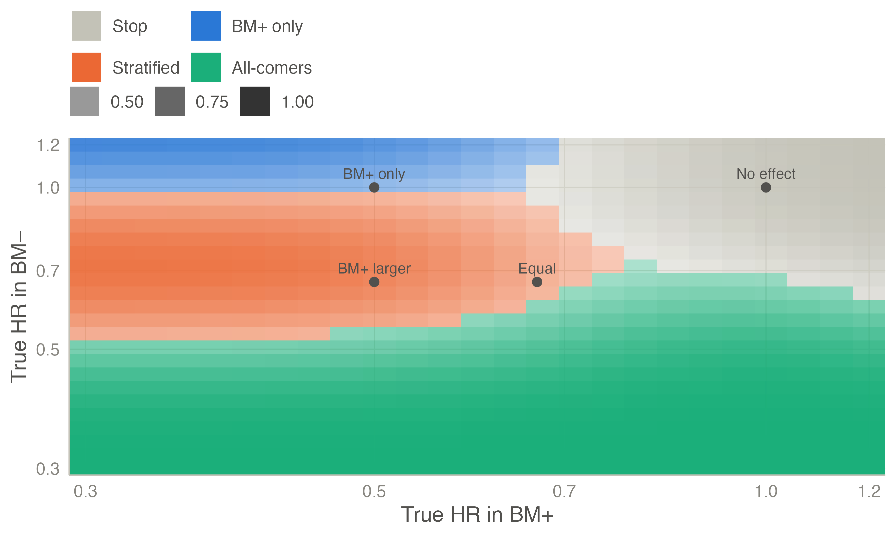
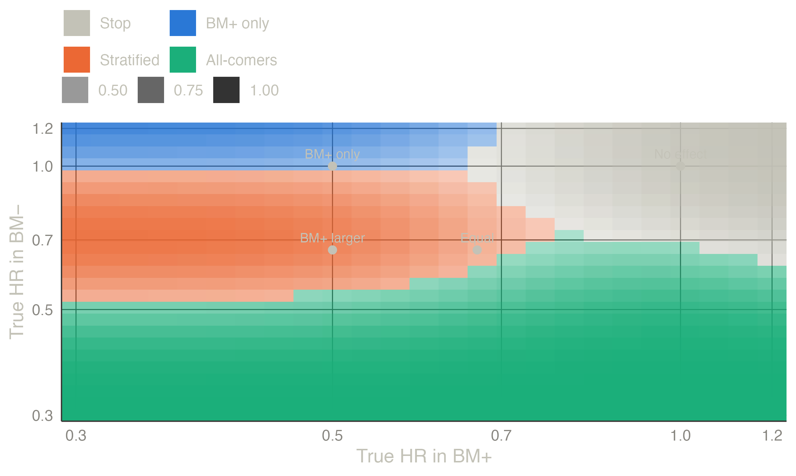
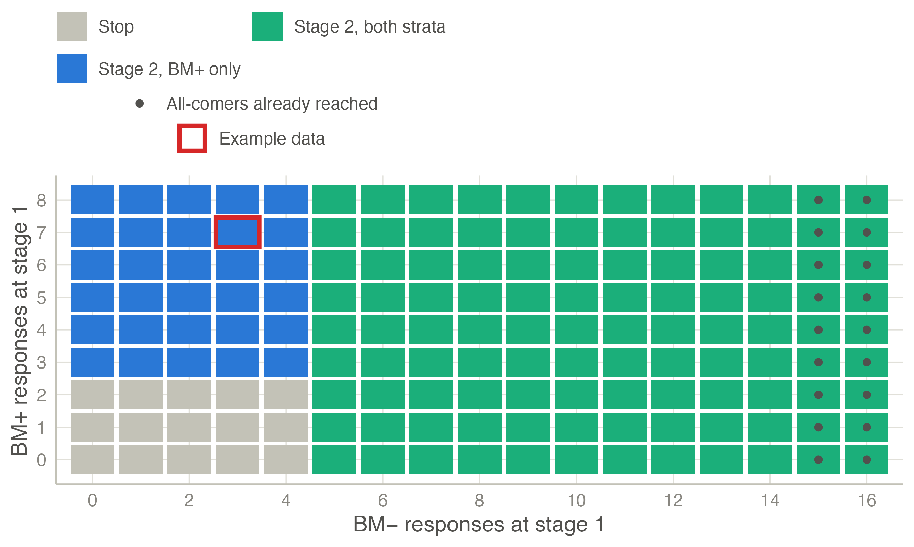
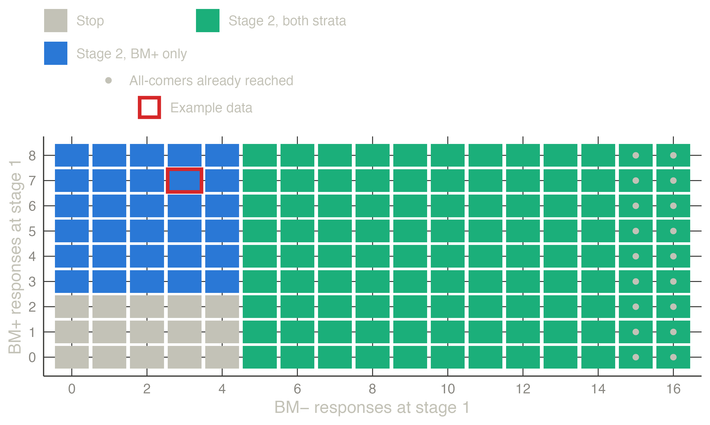

| Scenario | HR BM+ | HR BM− | Stop | BM+ only | Stratified | All-comers |
|---|---|---|---|---|---|---|
| No effect | 1.00 | 1.00 | 0.872 | 0.055 | 0.044 | 0.028 |
| BM+ only | 0.50 | 1.00 | 0.091 | 0.500 | 0.401 | 0.008 |
| Equal (intermediate) | 0.67 | 0.67 | 0.121 | 0.012 | 0.517 | 0.351 |
| BM+ larger | 0.50 | 0.67 | 0.023 | 0.018 | 0.793 | 0.166 |
Phase II with a predictive biomarker
Biomarker-stratified phase II trials that decide both whether to go to phase III and in which population: the randomized algorithm of Freidlin et al., and stratified single-arm two-stage designs (Jones & Holmgren, Parashar et al., Li & Ivanova).
The setting
Many phase II trials now enrol patients with and without a biomarker that may predict benefit (BM+ and BM−), and they have two aims:
- Go / no-go. Is the new treatment worth a phase III trial?
- Which population. Does the biomarker select the patients who benefit, so that phase III should enrol BM+ patients only?
The answer is one of four recommendations for phase III (Freidlin et al. 2012):
| Recommendation | When |
|---|---|
| Stop (no further testing) | no convincing benefit |
| BM+ only (enrichment design) | benefit in BM+, benefit in BM− ruled out |
| Biomarker-stratified design | benefit in BM+, BM− uncertain |
| All-comers (standard design) | benefit in both, or overall |
So a design is judged by the probability of each recommendation under a few true-effect scenarios, not by one type I error and one power.
Three facts shape these designs (McShane et al. 2009; Polley et al. 2013; Freidlin and Korn 2013; Renfro et al. 2016):
- A single-arm trial cannot show that a biomarker is predictive. A higher response rate in BM+ may mean the biomarker is prognostic (BM+ patients do better on any treatment). Single-arm results speak to predictiveness only if credible historical rates exist for each stratum. Randomized trials answer the question directly.
- Phase II trials cannot be powered for an interaction test. A trial with 80 % power for the overall effect has only about 29 % power to detect an interaction of the same size; detecting it needs about four times the patients (Brookes et al. 2004). The designs therefore apply a sequence of decisions to the effect in each stratum. The interaction, and Gail and Simon’s test for a qualitative interaction (effects in opposite directions) (Gail and Simon 1985), are reported but do not drive the decision.
- The BM+ estimate that triggers enrichment is optimistic (it was selected for being large), so phase III should not be sized from it naively.
Randomized designs: the algorithm of Freidlin et al.
Patients are randomized within each stratum. On the benefit scale \(\theta\) (\(-\log\) HR, with HR experimental : control, or the difference in response rates), stratum \(s\) gives \(Z_s \approx N(\theta_s \sqrt{I_s}, 1)\), where \(I_s\) is the information (\(d_s/4\) for \(d_s\) events with 1:1 allocation (SCHOENFELD 1981)). The decision algorithm (Freidlin et al. 2012):
- BM+ test. If \(Z_+ > z_{1-\alpha_1}\) (one-sided \(\alpha_1 = 0.10\)), go to step 3.
- Otherwise, overall test. If the stratified \(Z = (\sqrt{I_+} Z_+ + \sqrt{I_-} Z_-)/\sqrt{I_+ + I_-}\) exceeds \(z_{1-\alpha_2}\) (\(\alpha_2 = 0.05\)), recommend all-comers; otherwise stop.
- BM− effect. From the two-sided 80 % confidence interval of the HR in BM−: entirely above 0.77 (1/1.3) → BM+ only; entirely below 0.67 (1/1.5) → all-comers; otherwise → biomarker-stratified phase III.
The BM+ stratum is sized for the power target (90 % at HR 0.5), and the BM− stratum by the prevalence (natural accrual) or by a fixed ratio.
Exact operating characteristics. The strata are independent, so most recommendation probabilities are products of normal probabilities. Only the overall test couples the strata; it needs one integral over \(Z_+\), computed by Gauss–Legendre quadrature. With an interim futility look the within-stratum statistics are bivariate normal, handled with Genz’s algorithm (Genz 2004). With accrual at the natural prevalence, the probabilities are averaged exactly over the binomial number of BM+ patients.
Example
Median PFS 4 months on control in both strata, accrual over 21 months and 6 months of further follow-up, HR 0.5 targeted in BM+, two BM− patients per BM+ patient (the default of Biomarker-Stratified Phase II):
The design needs 55 BM+ events (68 BM+ and 136 BM− patients, about 117 BM− events).
When only BM+ patients benefit, the trial recommends a BM+ only or a biomarker-stratified phase III with probability 0.90. It rarely recommends all-comers, which would dilute the effect. With a smaller, equal effect in both strata, a stratified or all-comers phase III follows with probability 0.87. The same computation at a prevalence of one third, with random stratum sizes, reproduces Table 2 of Freidlin et al. (2012) (for example 0.50, 0.40, 0.01 and 0.09 when only BM+ benefits) to within 0.01.
The decision map shows the rule itself: the recommendation for every pair of estimated hazard ratios at the planned information. The cross is the example dataset of the module (Biomarker trial - randomized), 68 BM+ and 136 BM− patients:


The recommendation by true effects map gives the most likely recommendation for every pair of true hazard ratios, shaded by its probability; the four scenarios of the table are marked:


An interim futility look. Freidlin et al. (2012) recommend a futility analysis in each stratum at half the events (stop accrual to a stratum whose HR estimate shows no benefit, and stop the trial if BM+ is closed), but neither specify how a closed stratum enters the final decision nor include it in their simulations. The module offers it as an extension: a stratum closed at the interim enters the final rule with its interim data.
Single-arm designs
Without a control arm, each stratum is compared with an uninteresting response rate. The designs enrol a first stage in both strata and then choose a route:
- Parallel designs: an independent Simon two-stage design in each stratum (each at \(\alpha/2\)).
- Adaptive parallel designs (Jones and Holmgren 2007): if BM− shows enough responses at stage 1, both strata continue (unselected route); otherwise, if BM+ does, only BM+ continues (enrichment); otherwise the trial stops. At the end, enough BM− responses mean all-comers, and otherwise enough BM+ responses mean BM+ only.
- Optimal stratified two-stage designs (Parashar et al. 2016): the same routes, with early stopping when a final cut-off is already reached, and the ten sample sizes and cut-offs chosen to minimise the expected sample size under \(H_0\) subject to
- \(P(\text{any go} \mid p_0^-, p_0^+) \le \alpha\);
- \(P(\text{all-comers} \mid p_1^-) \ge 1 - \beta\);
- \(P(\text{BM+ only} \mid p_0^-, p_1^+) \ge 1 - \beta\).
- Isotonic rules (Li and Ivanova 2024): the same routes, but each stratum is judged against the pooled rate when the observed rates contradict the expected order (\(p^- \le p^+\)).
Other stratified designs include Tournoux‐Facon et al. (2011) (Fleming-based, with a heterogeneity test) and the sequential enrichment designs of Zang and Yuan (2016).
Exact computation and search. With the stage-1 counts of the two strata independent, the three routes to a positive result factor into BM− and BM+ parts: \(P(\text{all-comers}) = S\), \(P(\text{BM+ only}) = (C - S)\,T + (1 - C)\,E\), where \(C\) is the probability that BM− continues, \(S\) that it succeeds, \(T\) that BM+ succeeds on the unselected route and \(E\) on the enrichment route. The module enumerates the three parts separately, keeps only the undominated ones, and combines them by branch and bound on the expected size. It finds all eight optimal designs of Table IV of Parashar et al. (2016), in seconds for most of them.
Li & Ivanova’s published designs. Under the rules as stated in their paper, the designs in the tables of Li and Ivanova (2024) have a type I error slightly above 0.05 (0.054 to 0.060); the module evaluates user-defined designs with these rules, exactly, rather than searching.
Time to event. Single-arm designs use the rate of patients alive and event-free at a landmark (for example 6 months), converted from medians under exponential survival. All patients must be followed to the landmark.
Natural prevalence. The published single-arm designs fix the number of patients per stratum (enrolment continues until each stratum is full). If all-comers are enrolled instead, the stratum sizes vary; the module then re-derives each cut-off at the realised size, keeping its planned null tail probability, and averages the operating characteristics exactly over the sizes. This extension shows what random stratum sizes cost.
Example
Uninteresting response rate 0.20 in both strata, target 0.40 in BM− and 0.50 in BM+, one-sided \(\alpha = 0.05\) and power 80 %:
The optimal design enrols 16 BM− and 8 BM+ patients at stage 1. With at least 5 BM− responses both strata continue, up to 49 BM− and 17 BM+ patients. Otherwise, with at least 3 BM+ responses, only BM+ continues, up to 32 patients.
| Design | Scenario | Stop | BM+ only | BM− only | All-comers | Expected N |
|---|---|---|---|---|---|---|
| Optimal stratified | No effect | 0.950 | 0.016 | 0.000 | 0.034 | 36.364 |
| Optimal stratified | BM+ only | 0.166 | 0.800 | 0.000 | 0.034 | 48.863 |
| Optimal stratified | Both strata | 0.033 | 0.161 | 0.000 | 0.805 | 62.424 |
| Parallel Simon | No effect | 0.955 | 0.020 | 0.024 | 0.001 | 34.659 |
| Parallel Simon | BM+ only | 0.193 | 0.782 | 0.005 | 0.020 | 44.444 |
| Parallel Simon | Both strata | 0.040 | 0.160 | 0.158 | 0.642 | 68.752 |
The parallel designs reach all-comers only when both strata succeed on their own, so their power to recommend all-comers is lower (0.64 against 0.81), and they can end in the unexpected “BM− only”.
The decision map of a single-arm design is the route after every stage-1 outcome. The red box is the example dataset of the module (Biomarker trial - single arm): 3 of 16 BM− and 7 of 8 BM+ responses, so only BM+ continues. It ends with 24 responses among 32 BM+ patients: promising in BM+ only.


TipIn jmsequential
Sequential → Biomarker-Stratified Phase II (version 0.6.0).
- Trial: randomized or single arm; Endpoint: time to event or binary response; Stratum sizes: fixed per stratum or natural prevalence.
- Randomized design: the α of the two tests, the power in BM+, the allocation ratio, the confidence level and the two BM− limits, the effects (hazard ratios or differences), survival and accrual, and an optional interim futility look.
- Single-arm design: optimal or minimax stratified design (search), a user-defined design with the Jones & Holmgren or the isotonic rules, or parallel Simon designs; rates or, for time to event, medians and a landmark.
- Scenarios: a fifth, user-defined pair of effects.
- Analysis of observed data: patient-level data, with the biomarker, the arm (randomized) and the response or time and event. Single-arm data must be in arrival order.
- Output: operating characteristics, decision map, recommendation by true effects.
The example in jamovi
Randomized.
- Open Data library → jmsequential → Biomarker trial - randomized, PFS and response.
- Sequential → Biomarker-Stratified Phase II: the defaults are the randomized design above (the Randomized design box can be closed).
- In Analysis of observed data, move biomarker to Biomarker and choose the Positive level Positive; arm to Arm (randomized), with the Experimental level Experimental; pfs to Time (time to event); and progression to Event (time to event), with the Event level Yes. jamovi preselects the first level of each variable (Negative, Control and No here), so check all three; the note under the Observed data table repeats the levels used.

The Observed data table gives the hazard ratio in each stratum (BM+ 0.443, 95 % CI 0.250–0.784; BM− 0.837, 0.589–1.188), the stratified overall test and the interaction. The Decision table follows the algorithm: Z = 2.86 in BM+ (positive), the 80 % interval of the BM− HR (0.67–1.05) and the recommendation, a biomarker-stratified phase III. The Decision map places the estimates in Figure 1.


Single arm.
- Open Biomarker trial - single arm, arrival order.
- Sequential → Biomarker-Stratified Phase II, Trial: Single arm, Endpoint: Response (binary). The defaults of the Single-arm design box are the example: the optimal stratified design for 0.2 against 0.4 (BM−) and 0.5 (BM+), found in a few seconds.
- In Analysis of observed data, move biomarker to Biomarker (Positive level Positive) and response to Response (binary) (Response level Yes).


The design tables give the optimal design of Table 2, its sample sizes and its rules. The Observed data and Decision tables walk the patients through it: 3 of 16 BM− and 7 of 8 BM+ responses at stage 1, so only BM+ continues, and 24 of 32 BM+ responses in all: promising in BM+ only. The Decision map marks the stage-1 outcome (Figure 3).


References
Brookes, Sara T., Elise Whitely, Matthias Egger, George Davey Smith, Paul A. Mulheran, and Tim J. Peters. 2004. “Subgroup Analyses in Randomized Trials: Risks of Subgroup-Specific Analyses;” Journal of Clinical Epidemiology 57 (3): 229–36. https://doi.org/10.1016/j.jclinepi.2003.08.009.
Freidlin, Boris, and Edward L. Korn. 2013. “Biomarker Enrichment Strategies: Matching Trial Design to Biomarker Credentials.” Nature Reviews Clinical Oncology 11 (2): 81–90. https://doi.org/10.1038/nrclinonc.2013.218.
Freidlin, Boris, Lisa M. McShane, Mei-Yin C. Polley, and Edward L. Korn. 2012. “Randomized Phase II Trial Designs with Biomarkers.” Journal of Clinical Oncology 30 (26): 3304–9. https://doi.org/10.1200/jco.2012.43.3946.
Gail, M., and R. Simon. 1985. “Testing for Qualitative Interactions Between Treatment Effects and Patient Subsets.” Biometrics 41 (2): 361. https://doi.org/10.2307/2530862.
Genz, Alan. 2004. “Numerical Computation of Rectangular Bivariate and Trivariate Normal and t Probabilities.” Statistics and Computing 14 (3): 251–60. https://doi.org/10.1023/b:stco.0000035304.20635.31.
Jones, Cheryl L., and Eric Holmgren. 2007. “An Adaptive Simon Two-Stage Design for Phase 2 Studies of Targeted Therapies.” Contemporary Clinical Trials 28 (5): 654–61. https://doi.org/10.1016/j.cct.2007.02.008.
Li, Lang, and Anastasia Ivanova. 2024. “Isotonic Design for Single-Arm Biomarker Stratified Trials.” Statistical Methods in Medical Research 33 (6): 945–52. https://doi.org/10.1177/09622802241238978.
McShane, Lisa M., Sally Hunsberger, and Alex A. Adjei. 2009. “Effective Incorporation of Biomarkers into Phase II Trials.” Clinical Cancer Research 15 (6): 1898–905. https://doi.org/10.1158/1078-0432.ccr-08-2033.
Parashar, Deepak, Jack Bowden, Colin Starr, Lorenz Wernisch, and Adrian Mander. 2016. “An Optimal Stratified Simon Two‐stage Design.” Pharmaceutical Statistics 15 (4): 333–40. https://doi.org/10.1002/pst.1742.
Polley, M.-Y. C., B. Freidlin, E. L. Korn, B. A. Conley, J. S. Abrams, and L. M. McShane. 2013. “Statistical and Practical Considerations for Clinical Evaluation of Predictive Biomarkers.” JNCI Journal of the National Cancer Institute 105 (22): 1677–83. https://doi.org/10.1093/jnci/djt282.
Renfro, Lindsay A., Himel Mallick, Ming-Wen An, Daniel J. Sargent, and Sumithra J. Mandrekar. 2016. “Clinical Trial Designs Incorporating Predictive Biomarkers.” Cancer Treatment Reviews 43 (February): 74–82. https://doi.org/10.1016/j.ctrv.2015.12.008.
SCHOENFELD, DAVID. 1981. “The Asymptotic Properties of Nonparametric Tests for Comparing Survival Distributions.” Biometrika 68 (1): 316–19. https://doi.org/10.1093/biomet/68.1.316.
Tournoux‐Facon, Caroline, Yann De Rycke, and Pascale Tubert‐Bitter. 2011. “Targeting Population Entering Phase III Trials: A New Stratified Adaptive Phase II Design.” Statistics in Medicine 30 (8): 801–11. https://doi.org/10.1002/sim.4148.
Zang, Yong, and Ying Yuan. 2016. “Optimal Sequential Enrichment Designs for Phase II Clinical Trials.” Statistics in Medicine 36 (1): 54–66. https://doi.org/10.1002/sim.7128.